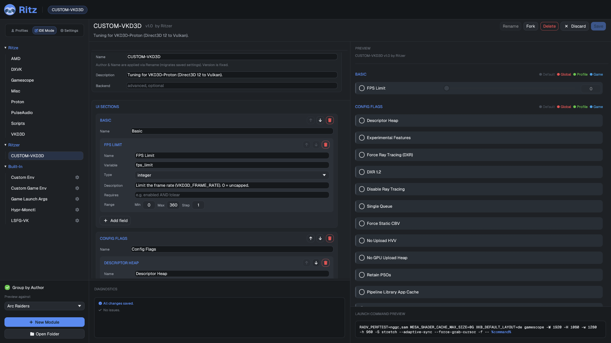

extension reference
Everything ritz can do ships as a small JSON file called a module (extension). Below: the bundled catalog, then the complete manifest schema so you can write your own.
bundled modules
Ritz ships these modules out of the box under
resources/extensions/default/ and resources/extensions/built-in/.
Each contributes a UI section you configure per-scope, which compiles into env vars,
a command wrapper, launch args, or a native runtime backend.
Gamescope
The gamescope micro-compositor: enable/backend/scaler, output & internal resolution, refresh rate, sync & input flags, FSR upscaling.
Proton
Sync backend (NTSync/FSYNC), renderer overrides (WineD3D, D3D8/10/11), display (Wayland, HDR, integer scaling), NVAPI/GPU-hiding, compat & debug toggles.
AMD
RADV_PERFTEST flags (NGGC, SAM), Mesa Anti-Lag layer, Vulkan present-mode override, RADV_DEBUG nohiz workaround, experimental UMR queue, shader cache size.
DXVK
D3D8/9/10/11 → Vulkan: FPS limit, HUD overlay, graphics-pipeline-library, frame latency, tearing/HDR.
VKD3D
D3D12 → Vulkan: FPS limit, a dozen VKD3D_CONFIG flags (descriptor heap, ray tracing, PSO retention…) plus a raw-flags passthrough, present mode.
Misc
Clear LD_PRELOAD/VK_INSTANCE_LAYERS, force X11 SDL backend, keyboard layout, and a gamemoderun wrapper.
PulseAudio
Client latency, output sink routing, media.role=game tagging for PulseAudio/PipeWire-pulse.
Scripts
Pre-launch (blocking), post-spawn (background), and post-exit (blocking) user shell commands.
Game Launch Args
An uncapped list of free-text arguments appended verbatim after the game command.
Custom Env
An uncapped list of free-form NAME=VALUE pairs, applied chain-wide.
Custom Game Env
Same shape as Custom Env, but game-only — emitted into GAME_ENV_VARS instead of ENV_VARS.
LSFG-VK
Lossless Scaling frame generation: enable, multiplier (2×–8×), flow scale, performance/HDR mode, present-mode override, activation delay.
Hypr-Monctl
Per-game display saturation, brightness, and temperature via a Hyprland plugin — only loads when $XDG_CURRENT_DESKTOP is Hyprland.
.json modules into
~/.config/ritz/extensions/ — the reference below is the complete schema.anatomy of a module
A module is either a single file or a folder with exactly one manifest plus any scripts it references:
extensions/
├─ my-tweaks.json # single-file module
└─ my-scripts/ # folder module
├─ my-scripts.json # exactly one manifest
├─ pre.sh # scripts referenced by the manifest
└─ post.shEach module assembles into up to four launch blocks plus optional lifecycle hooks. The final command is:
A skeleton with every top-level key:
{
"Extension": { "Name": "...", "Author": "...", "Version": "1.0", "Description": "..." },
"AppIds": ["730"], // optional: restrict to these Steam AppIds (omit = all games)
"Backend": "custom-env", // optional: route to a built-in runtime handler
"RequiresDesktop": "Hyprland",// optional: only load on this $XDG_CURRENT_DESKTOP
"UI": { "Section": [ /* fields */ ] },
"ENV_VARS": [ /* whole-chain environment */ ],
"GAME_ENV_VARS": [ /* game-only environment */ ],
"WRAPPERS": [ /* gamescope-style wrappers */ ],
"GAME_LAUNCH_ARGS":[ /* args appended after %command% */ ],
"Hooks": { /* lifecycle scripts */ },
"ScriptBuilders": [ /* advanced: scripts that emit block content */ ]
}editing modules visually — IDE mode
Don't want to hand-write JSON? The settings GUI has an IDE Mode nav destination: pick a module from the list on the left, edit its metadata and UI sections/fields in the middle manifest editor, and watch a live preview on the right — the module rendered exactly as it would look in normal use, driving the same launch-command preview, checked against any game you choose. Fork a bundled module to start from a working example, or New Module to build one from scratch — either way you're still just editing the same JSON schema documented below, without leaving the GUI.

metadata
"Extension": {
"Name": "AMD",
"Author": "Ritze",
"Version": "1.0",
"Description": "RADV driver tuning."
}A module's identity is <Author>::<Name>::<Version> —
this is also how stored values are keyed, so renaming a module orphans its old saved
values (clear them with Config Cleanup).
| Key | Meaning |
|---|---|
AppIds | Array of Steam AppIds this module applies to. Omit for a global module (all games). |
Backend | Routes the module's values to a built-in handler instead of (or alongside) the command builder. See Backends. |
RequiresDesktop | Only load when $XDG_CURRENT_DESKTOP matches (e.g. "Hyprland"). Otherwise the module is hidden and never applied. |
UI & fields
UI is an ordered map of section name → list of fields. Sections
render in declared order. Each field binds a Variable the builders
reference.
"UI": {
"RADV Perftest": [
{ "Name": "Enable RADV Perftest", "Description": "Enable RADV_PERFTEST tuning.",
"Type": "toggle", "Variable": "enabled", "Default": false },
{ "Name": "ACO Compiler", "Description": "Enable the ACO shader compiler.",
"Type": "toggle", "Variable": "aco", "Requires": "enabled" }
]
}field types
| Type | Renders as | Notes |
|---|---|---|
toggle | Checkbox | Boolean. Default is true/false. |
string | Text box | Free-form value. |
integer | Slider + spinner | Needs Options: { min, max, step }. |
float | Slider + spinner | Same Options range; decimals allowed. |
selection | Dropdown | Options is the list of stored values; optional DisplayOptions gives parallel labels. |
multi_string | Growing slot list | A list of strings (add/remove rows). See Lists & for-each. |
lists & for-each (multi_string)
A multi_string field stores a list of strings, edited
as a growing slot list (like the Custom Env rows). It resolves to its non-empty
entries joined by newlines, and is truthy when it has at
least one entry. Because of that newline-join, a list naturally behaves like a
for-each wherever it's consumed:
- Launch args & wrappers shell-split the interpolated value,
so
{my_list}expands to one token per entry. - Hook scripts receive the newline-joined list in
RITZ_VAR_<name>and loop over the lines (the bundled Scripts module runs one command per entry). - Env vars are the exception: a
set/appendgets the whole list as one newline-joined value (no per-entry expansion).
{ "Name": "Commands", "Type": "multi_string", "Variable": "pre_command" }
// stored as: "pre_command": ["echo hi", "mangohud &"]
// RITZ_VAR_pre_command = "echo hi\nmangohud &" → the hook runs each linecommon field keys
| Key | Meaning |
|---|---|
Name / Description | Label and tooltip (optional). |
Variable | The variable name builders reference. Required. |
Default | Value used when nothing is set at any scope (optional). |
Options | Selection list (["a","b"]) or numeric range ({ "min":0, "max":16, "step":1 }). |
DisplayOptions | Pretty labels parallel to a selection's Options. |
Requires | Boolean expression gating this field's visibility — see below. |
a selection with labels
{ "Name": "Backend", "Type": "selection", "Variable": "backend", "Requires": "enabled",
"DisplayOptions": ["Auto", "DRM", "SDL", "Wayland"],
"Options": ["auto", "drm", "sdl", "wayland"] }The user sees the DisplayOptions label; the matching
Options value is stored and interpolated.
variables & scoping
Variable names are auto-scoped per module — short names like
enabled or backend never collide with another module's. A
field is "truthy" when set: a toggle that's on, or any non-empty
string/selection/number.
To share a value with other modules' builders, name it
global:<name>. Such a variable is published to the build-phase
scope and can be referenced by other modules (only allowed in builders, not in UI
Requires).
the Requires grammar
Requires gates both UI visibility and whether a builder entry fires.
It's a boolean expression of variable names:
expr := and ( "OR" and )*
and := atom ( "AND" atom )*
atom := "!" atom | IDENT // NOT also written "!"Precedence is ! > AND > OR; there are
no parentheses. An empty/omitted expression is always true.
"Requires": "enabled"
"Requires": "enabled AND fsr_enabled"
"Requires": "gamescope AND !native_res"
"Requires": "descriptor_heap OR raw_config" // fires if either is setenvironment variables
ENV_VARS apply to the whole launch chain (the child process
environment); GAME_ENV_VARS apply only to the game (via an
env shim after the wrapper). Both use the same shape: a named variable
whose value is assembled by an ordered Builder.
"ENV_VARS": [
{
"Name": "RADV_PERFTEST",
"Requires": "enabled", // skip the whole var unless this holds
"Builder": [
{ "Requires": "clear", "Type": "set", "Value": "" },
{ "Requires": "aco", "Type": "append", "Separator": ",", "Value": "aco" },
{ "Requires": "nggc", "Type": "append", "Separator": ",", "Value": "nggc" }
]
}
]Builder Type | Effect |
|---|---|
set | Replace the accumulated value with Value. |
append | Append Value, joined with Separator (default ,). |
unset | Mark the variable unset (emitted via env -u). |
Builder entries evaluate in declaration order, each gated by its own
Requires. {var} in any Value (or even in
Name) interpolates that variable's current value. So the snippet above
yields RADV_PERFTEST=aco,nggc when aco and nggc
are on.
append for
additive values like VK_INSTANCE_LAYERS.wrappers
Wrappers are programs prepended left of %command% — the
gamescope … -- %command% idiom. CommandSyntax is a template
with an {OPTIONS} placeholder filled from the Builder (each
entry's Value, space-joined, gated by Requires).
"WRAPPERS": [
{
"CommandSyntax": "gamescope {OPTIONS} --",
"Requires": "enabled",
"Priority": 100, // lower = further left in the chain
"Builder": [
{ "Requires": "output_width", "Value": "-W {output_width}" },
{ "Requires": "fsr_enabled", "Value": "--filter fsr" },
{ "Requires": "fullscreen", "Value": "-f" }
]
}
]Multiple wrappers (across modules) are ordered by Priority ascending,
then by module order. The rendered template is shell-split into argv.
game launch arguments
GAME_LAUNCH_ARGS are appended after the game command. Each
entry is a gated value; the value is shell-split, so one entry may contain multiple
tokens.
"GAME_LAUNCH_ARGS": [
{ "Requires": "condebug", "Value": "-condebug" },
{ "Requires": "extra", "Value": "{extra}" } // e.g. extra = "-nojoy +fps_max 0"
]hooks & scripts
Lifecycle hooks run scripts (paths relative to the module folder) at four points. A hook is either a bare path (runs blocking) or an object that can opt into background execution.
"Hooks": {
"PreLaunch": "pre.sh", // before launch (blocking)
"PostSpawn": { "Script": "notify.sh", "Background": true },
"OnGameReady": "ready.sh", // when the real game process appears
"PostExit": "cleanup.sh" // after the game exits
}ScriptBuilders are an advanced escape hatch: a script emits content
for a launch block (ENV_VARS, WRAPPERS,
GAME_ENV_VARS, or GAME_LAUNCH_ARGS) at build time.
"ScriptBuilders": [ { "Block": "ENV_VARS", "Script": "build-env.sh" } ]backends
A module with a Backend routes its values to a built-in handler —
either a special GUI (dynamic slot lists) or a runtime process handler — rather than
(or in addition to) the plain command builder. Bundled backends:
| Backend | Module | What it does |
|---|---|---|
custom-args | Game Launch Args | Uncapped list UI for free-form launch arguments; appends each non-empty line verbatim. |
custom-env | Custom Env | Uncapped Name|Value list UI for chain-wide env vars. |
custom-game-env | Custom Game Env | Same as custom-env, but emitted into GAME_ENV_VARS (game-only). |
lsfg-vk | LSFG-VK | Writes ~/.config/lsfg-vk/conf.toml, sets LSFG_PROCESS, supports an activation delay; live-reloadable. |
hypr-monctl | Hypr-Monctl | Per-game display vibrance via a Hyprland plugin (RequiresDesktop: "Hyprland"). |
full example module
A complete single-file module exercising fields, Requires, env
builders, a wrapper, and launch args:
{
"Extension": {
"Name": "Example", "Author": "You", "Version": "1.0",
"Description": "Demonstrates every block."
},
"UI": {
"Basic": [
{ "Name": "Enable", "Type": "toggle", "Variable": "enabled", "Default": false },
{ "Name": "FPS Limit", "Type": "integer", "Variable": "fps",
"Options": { "min": 0, "max": 360, "step": 1 }, "Requires": "enabled" },
{ "Name": "Renderer", "Type": "selection", "Variable": "renderer", "Requires": "enabled",
"DisplayOptions": ["Vulkan", "OpenGL"], "Options": ["vk", "gl"] }
],
"Advanced": [
{ "Name": "Extra args", "Type": "string", "Variable": "extra", "Requires": "enabled" }
]
},
"ENV_VARS": [
{ "Name": "MY_FPS_CAP", "Requires": "fps",
"Builder": [ { "Requires": "fps", "Type": "set", "Value": "{fps}" } ] }
],
"GAME_ENV_VARS": [
{ "Name": "MY_RENDERER", "Requires": "renderer",
"Builder": [ { "Requires": "renderer", "Type": "set", "Value": "{renderer}" } ] }
],
"WRAPPERS": [
{ "CommandSyntax": "mangohud {OPTIONS}", "Requires": "enabled", "Priority": 50,
"Builder": [ { "Requires": "fps", "Value": "--fps-limit {fps}" } ] }
],
"GAME_LAUNCH_ARGS": [
{ "Requires": "extra", "Value": "{extra}" }
]
}Preview any config with ritz --print %command% to see exactly how it
assembles (outside real Steam, set an id first:
RITZ_APPID=<id> ritz --print %command%).
config files
You normally never edit these by hand — the GUI writes them — but here's the
shape. Values are keyed by Author → Name → variable, and only
explicitly-set values are stored.
global.json — applies to every game
{
"Name": "",
"Modules": {
"Ritze": {
"Misc": { "kbd_layout": "de" }
}
}
}profiles/Competitive.json
{
"Name": "Competitive",
"Pin": 1,
"Modules": {
"Ritze": {
"Gamescope": { "enabled": true, "fullscreen": true },
"AMD": { "enabled": true, "aco": true }
}
}
}games/730.json — keyed by SteamAppId
{
"Game": { "Name": "Counter-Strike 2", "AppId": "730" },
"Config": {
"General": { },
"Modules": {
"Preset": "Competitive", // the assigned profile
"Ritze": {
"DXVK": { "fps_limit": 240 } // a game-scope override
}
}
}
}